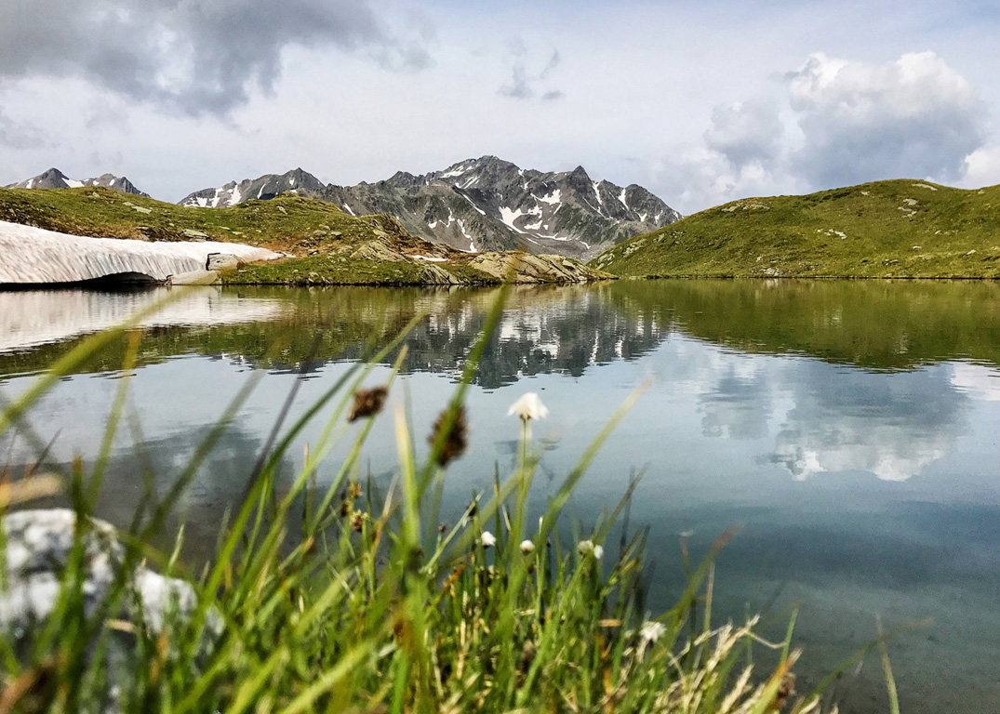
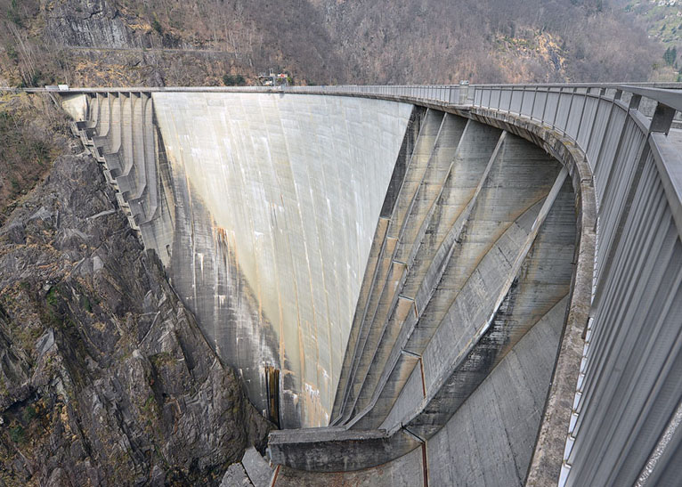
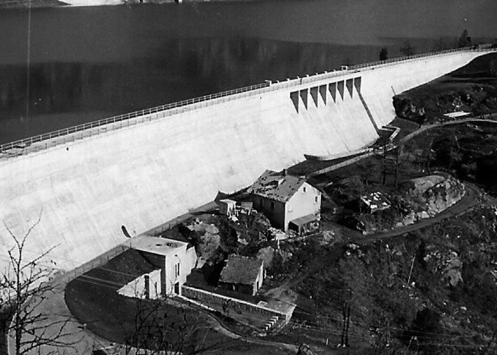
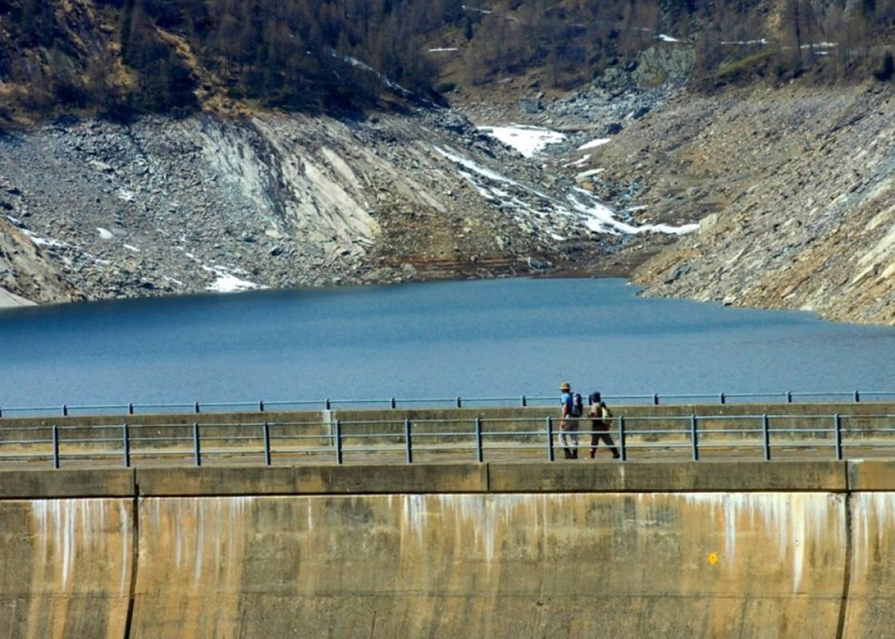
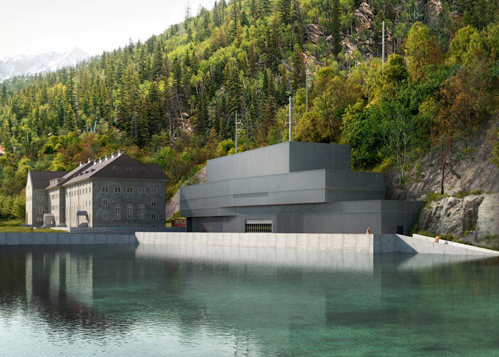

|
Acque

|
Il settore Acque si occupa degli aspetti inerenti la distribuzione delle acque sulla superficie del Cantone Ticino.

I corsi d’acqua e i laghi, oltre a essere importanti per la vita dell’uomo (approvvigionamento idrico e energetico, svago, pesca, ...) e degli altri organismi viventi, sono elementi caratteristici del nostro paesaggio: essi meritano la nostra attenzione e protezione.
Attraverso le attività di monitoraggio l’UPAAI, oltre a verificare la qualità delle acque, contribuisce alla conoscenza dello stato dell’ambiente acquatico ticinese e offre un supporto pianificatorio, scientifico e di verifica per i progetti di risanamento e di rivitalizzazione dei corsi d’acqua e delle rive lacustri.
|
|
Diga

Quando una diga produce un invaso superiore al milione di metri cubi o è alta più di 15 m, prende il nome di ‟grande diga” e il suo controllo spetta direttamente allo stato. Quando supera i 10 m di altezza o i centomila metri cubi risulta essere sotto il controllo delle regioni. Per dimensioni inferiori, il suo controllo spetta al gestore che può essere anche privato. Di solito l’ultimo tipo di diga prende il nome di ‟traversa”.
A seconda dei materiali impiegati per la costruzione la diga fissa può essere di calcestruzzo (o muratura), in terra, di pietrame, di materiale misto.
|
Una diga è uno sbarramento artificiale permanente, fisso o mobile, atto a regolare il deflusso di un corso d’acqua naturale, a creare un lago artificiale, oppure a proteggere un tratto di costa o un porto.

Gli sbarramenti in calcestruzzo possono essere del tipo a gravità (anche alleggerita), ad arco o di tipi misti (arco-gravità, volte multiple, ecc.). Si tratta di un’opera importante in fase di progettazione e realizzazione nell’ambito dell’ingegneria civile. Le dighe mobili e le traverse in genere sono realizzate solitamente in carpenteria metallica con movimentazione idraulica ad olio, ma ne esistono anche in legno (porte vinciane), in gomma con movimentazione pneumatica o idraulica ad acqua (rubberdam), ibride in gomma e metallo con lo stesso tipo di movimentazione delle traverse in gomma (hard top rubber dam).
|
|
Diga /
Progetto Diga del Ritom
Costruita nel 1920, la centrale Ritom del canton Ticino sfrutta l’acqua che arriva dal bacino di raccolta che la sovrasta. Entrò in funzione quando nella linea ferroviaria del Gottardo fu introdotta la trazione elettrica.
|

Nel 1920 non c’era grande disponibilità di ferro e per questo alcune delle mura dell’edificio che ospita la centrale sono davvero poderose: sono di calcestruzzo rinforzato.‟Sono molto spesse le pareti della stanza che ospita la turbina a causa della gru e dei binari usati. Si tratta di una caratteristica peculiare della costruzione”, spiega Holenstein. I libri di storia raccontano che si tratta, insieme ad Amsteg, della prima centrale elettrica costruita per generare direttamente corrente a fase singola con 16 e 2/3 cicli al secondo. Se non siete delle aquile sull’argomento, come d’altronde chi scrive, una visita al Ritom non potrà che giovarvi. In parole povere, l’acqua del bacino di raccolta che sovrasta la centrale scende a valle canalizzata in due condotti, che diventano quattro per raggiungere ognuno una turbina ed un generatore.‟Quattro turbine e quattro generatori che normalmente sono in funzione 24 ore al giorno e 365 giorni all’anno”, racconta a swissinfo Alfiero Martinoli, che è a capo dello staff di 13 persone che lavora nella centrale.
|
|
Idroelettrico
L’energia idroelettrica è considerata una fonte di energia alternativa e rinnovabile, che sfrutta la trasformazione in energia elettrica, tramite un alternatore accoppiato ad una turbina in una centrale idroelettrica, dell’energia potenziale gravitazionale posseduta da una certa massa dacqua contenuta in un lago ad una certa quota altimetrica, sfruttando un determinato dislivello, o direttamente dell’energia cinetica posseduta da una corso d’acqua.
I greci e i romani furono le prime civiltà nel Mondo, ad utilizzare la potenza dell’acqua, o più precisamente dell’energia cinetica prodotta da essa; si deve però specificare che queste due antiche civiltà sfruttarono questo tipo di energia rinnovabile solo per azionare semplici mulini ad acqua per macinare il grano.
|
L’energia idroelettrica è considerata una fonte di energia alternativa e rinnovabile, che sfrutta la trasformazione in energia elettrica.

Si deve aspettare il Basso Medioevo e le scoperte portate dal popolo degli Arabi del Nord Africa, per avere altri metodi di sfruttamento dell’energia contenuta in un flusso d’acqua: furono sempre più utilizzate, sia per l’irrigazione dei campi sia per la bonifica di vaste zone paludose, la ruota idraulica, schematizzabile come un mulino senza pale che ruotava su un punto fisso per azione della forza esercitata dall’acqua stessa.
Un progresso tecnico di enormi proporzioni si è avuto alla fine dell’Ottocento, circa all’inizio della Seconda Rivoluzione Industriale avvenuta in Europa e non solo, in seguito all’evoluzione della ruota idraulica in turbina, macchina motrice costruita da una ruota a pale imperniata su un asse, che all’inizio erano grossolane e schematizzate, ma con le innovazioni tecnologiche, soprattutto della prima metà del Novecento, divenne sempre più perfezionata e funzionale.
|
|
Idroelettrico /
Alpe Ritom
Il progetto della nuova centrale idroelettrica del Ritom si inserisce nell’ambito della Strategia Energetica 2050 della Confederazione, rivestendo un ruolo cardine a sud delle Alpi. Il progetto, che prevede di potenziare e ampliare l’impianto esistente costruito nel 1917 dalle FFS, contempla interventi su diversi livelli. A fianco alla monumentale centrale di Piotta è prevista la costruzione di una nuova sala macchine dove saranno alloggiati due nuovi gruppi produttivi (turbine Pelton e generatore) da 16.7 e 50 Hz e una pompa. Questo nuovo edificio integrerà la centrale esistente AET di Stalvedro, alimentata dalle acque raccolte nel bacino di compenso di Airolo. Davanti alla nuova costruzione verrà realizzato un grosso bacino di demodulazione. Esso avrà la funzione di controllare e regolare il deflusso nel fiume Ticino delle acque provenienti dalle centrali Ritom e Stalvedro.
|
Il progetto si inserisce nell’ambito della Strategia Energetica 2050 della Confederazione, rivestendo un ruolo cardine a sud delle Alpi.

Una pompa permetterà inoltre di collegare il bacino di Airolo con il lago Ritom con conseguente aumento della flessibilità produttiva dell’intera catena della Leventina. È inoltre in fase di realizzazione un convertitore di frequenza che permetterà la trasformazione della corrente da 16.7 a 50 Hz e viceversa con ovvi vantaggi sulla flessibilità dell’impianto.
Le attuali condotte forzate, che dalla diga di Piora portano l’acqua in pressione alla centrale esistente, saranno sostituite da un nuovo sistema di adduzione in sotterraneo. Il tunnel o meglio «pozzo forzato» partirà da una nuova camera valvole con pozzo di accesso realizzata in quota, in adiacenza alla nuova presa sotto carico della diga.
Si tratta dunque di un grosso intervento che, seppure contraddistinto da un innegabile carattere funzionale e tecnico, ha richiesto un attento studio di inserimento paesaggistico volto al dialogo con il contesto. Il coinvolgimento degli architetti fin dalle prime fasi di progetto ha portato a un risultato che evidenzia l’attenzione e la sensibilità nei confronti della tematica della compensazione e della valorizzazione ambientale e paesaggistica estesa a tutto il comparto.
Ripercorrendo la strada che dalla base arriva in quota, a livello della diga, l’obiettivo è stato quello di ottenere un tema architettonico univoco che legasse i nuovi interventi con gli edifici esistenti e gli elementi naturali – quali il versante, che passa da zone più rocciose a zone più verdi, il fiume Ticino, il riale Foss e la diga – rispettando, al contempo, i forti condizionamenti tecnici e ingegneristici legati alla funzionalità del sistema. In tale senso sono stati realizzati due piani di quartiere: uno alla base, in località Piotta, e uno in testa, a Piora.
|